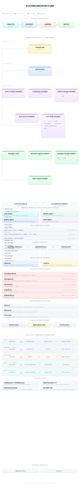

Rust 2026 Template
A production-ready Rust workspace template with modern tooling and AI agent integration.
Quick Start
./scripts/bootstrap.sh
cargo build --workspace
Getting Started
Prerequisites
- Rust 1.88+ via rustup
- Git 2.30+
- Python 3 (optional, for TOML/YAML validation)
Quick Setup
Clone and bootstrap in one command:
git clone https://github.com/your-org/your-repo.git
cd your-repo
./scripts/bootstrap.sh
The bootstrap script:
- Checks your environment (git, cargo)
- Installs skill symlinks for AI agents
- Configures git hooks for pre-commit quality checks
- Validates all skills
- Runs the full quality gate
Manual Setup
If you prefer step-by-step:
# 1. Install Rust (if not already installed)
curl --proto '=https' --tlsv1.2 -sSf https://sh.rustup.rs | sh
# 2. Build the workspace
cargo build --workspace
# 3. Run tests
cargo nextest run --workspace
# 4. Run quality checks
./scripts/quality-gates.sh
Project Structure
.
├── crates/ # Workspace members
│ ├── sample-app/ # Reference binary application
│ ├── example-crate/ # Placeholder library
│ ├── actor-runtime-template/
│ ├── checkpoint-template/
│ ├── hybrid-storage-template/
│ ├── mcp-server-template/
│ └── example-*/
├── examples/ # Example binaries
├── benchmarks/ # Criterion benchmarks
├── scripts/ # Automation scripts
├── .agents/skills/ # AI agent skills
└── docs/ # Documentation (mdbook)
Common Commands
| Task | Command |
|---|---|
| Build | cargo build --workspace |
| Test | cargo nextest run --workspace |
| Lint | cargo clippy --workspace --all-targets |
| Format | cargo fmt --all |
| Quality gate | ./scripts/quality-gates.sh |
| Diagnostics | ./scripts/doctor.sh |
Feature Flags
Enable optional features in Cargo.toml:
[dependencies]
rust-2026-template = { path = "..", features = ["cli", "persistence"] }
| Feature | Description |
|---|---|
cli | CLI binary support (clap, anyhow) |
persistence | SQL persistence backend (libsql) |
parallel | CPU parallelism (rayon) |
wasm | WASM build target support |
mcp | MCP server support (requires cli) |
tracing-json | JSON tracing output |
tracing-opentelemetry | OpenTelemetry backend |
IDE Setup
VS Code — Install the rust-analyzer extension. The workspace is pre-configured with optimal settings in .cargo/config.toml.
Other editors — Ensure rust-analyzer or rLS is installed. The rust-toolchain.toml file auto-selects the correct toolchain.
Troubleshooting
Run the diagnostic script:
./scripts/doctor.sh
This checks:
- Rust toolchain version
- Required tools (cargo-nextest, cargo-deny, etc.)
- Git configuration
- Skill symlinks
- Build health
Architecture

Overview
This diagram shows the complete system architecture of the Rust 2026 Template workspace, including:
- Pipeline Orchestration — CI/CD stages from analysis to deployment
- Workspace Topology — All 11 crates organized by layer (applications, core libraries, templates, examples)
- Active Skills — 21 agent skills for development workflows
- Interface Protocols — Slash commands and tool integrations
Crate Layers
| Layer | Crates | Purpose |
|---|---|---|
| Applications | sample-app | Reference binary application |
| Core Libraries | benchmarks | Performance measurement |
| Templates | actor-runtime-template, checkpoint-template, hybrid-storage-template, mcp-server-template, rust-2026-template | Reusable architectural patterns |
| Examples | example-crate, example-registry-pattern, example-storage-pattern, hello-world-example | Learning references |
Dependency Flow
Dependencies flow upward only: examples → templates → core → applications. This is enforced by cargo deny.
Regenerating the Diagram
python .agents/skills/architecture-diagram/scripts/generate_diagram.py --root . --out .template/architecture.svg
cp .template/architecture.svg docs/src/architecture.svg